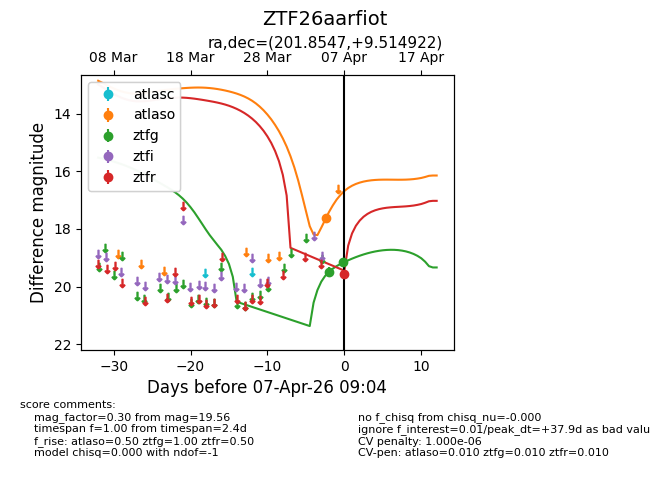
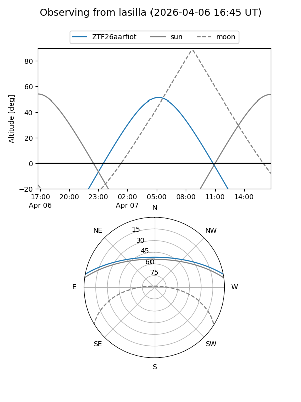
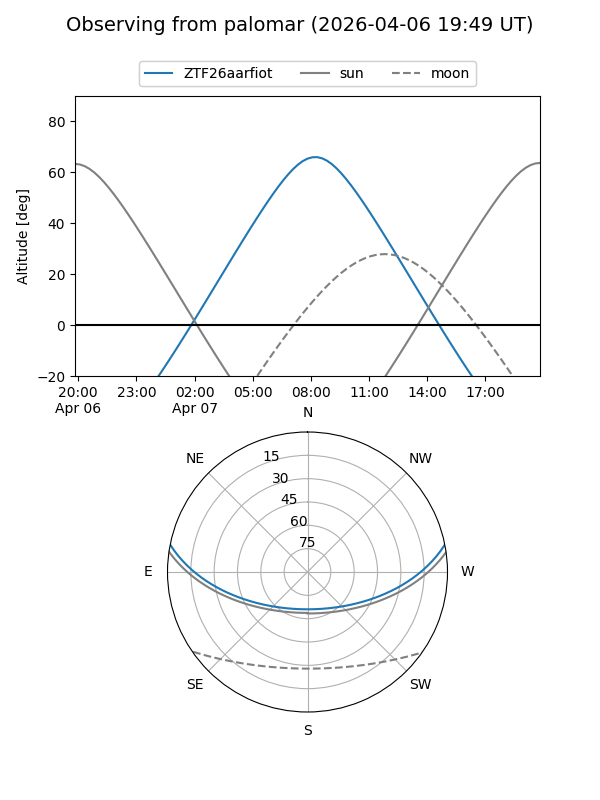
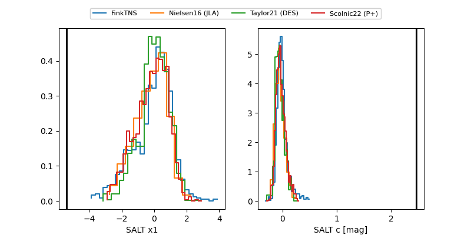

ZTF26aarfiot
Target ZTF26aarfiot at 2026-04-07 09:09
Aliases and brokers:
FINK: link
Lasair: link
ALeRCE: link
alt names
ZTF26aarfiot (ztf,fink_ztf)
Coordinates:
equatorial (ra, dec) = 201.8547,+9.51492
equatorial (HMS+DMS) = 13:27:25.13,+09:30:53.72
galactic (l, b) = (330.3653,+70.44579)
Flags:
likely cv
Photometry:
last atlaso=17.62, ztfg=19.17, ztfr=19.56
1 atlaso, 2 ztfg, 1 ztfr detections
Lightcurve

Visibility


Additional plots
